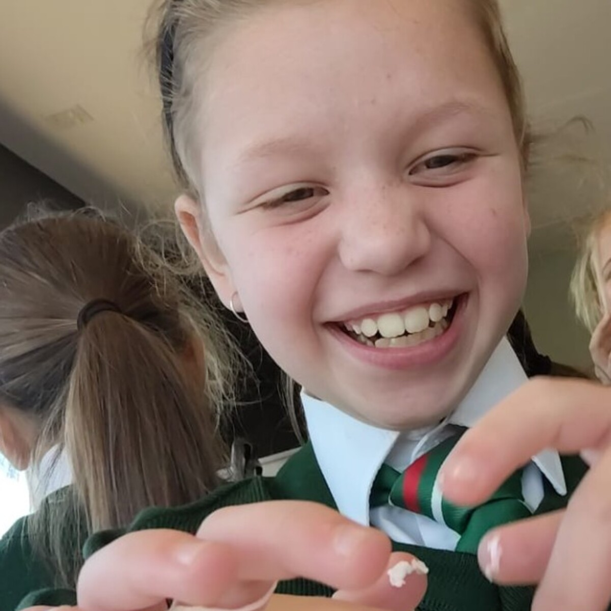
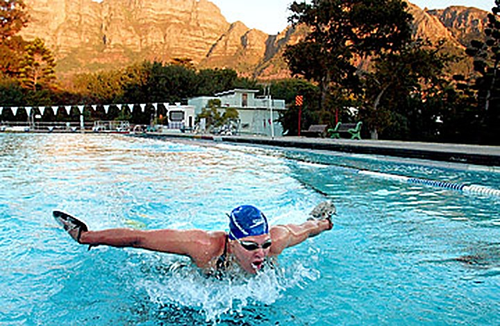
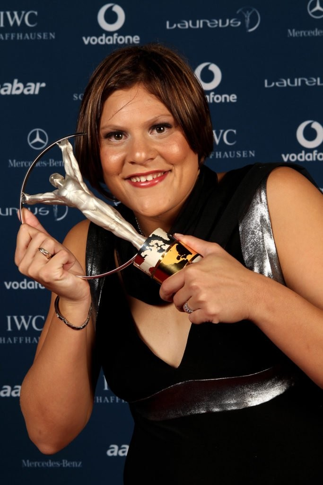
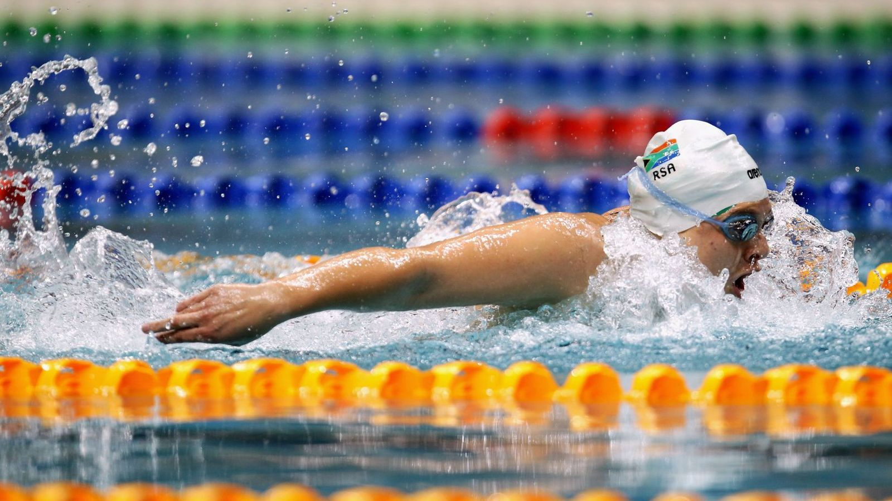
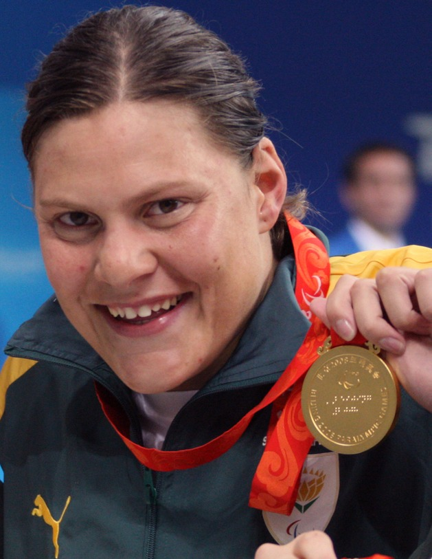
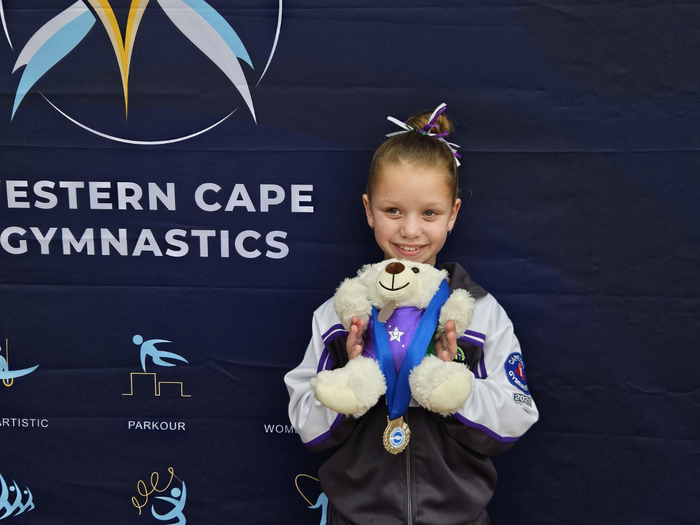
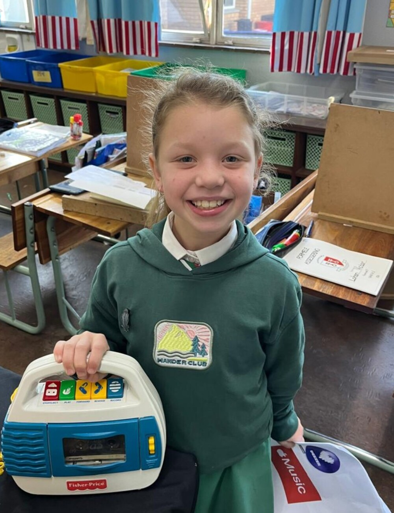

My South African Hero
Natalie
du Toit
Presented by Luchelle Crafford
Grade 3A1 • Panorama Primary School

Meet my hero
A swimmer from
Cape Town
- ★Born in Cape Town
- ≈Loved swimming from a young age
- ✓Became a famous South African swimmer

17
Years old
A serious scooter accident changed her life.
Doctors had to amputate her left leg.
Brave
Did not give up


Courage in action
She chose to
start again.
She worked hard every day
and returned to the pool.
2008
Olympic Games
Beijing
She represented
South Africa.


Just like my hero, I keep going
Why she is
my hero
She was a great swimmer.
Most importantly,
she never gave up.
Natalie taught me to…
- ✓Keep trying
- ✓Believe in myself
- ✓Work hard
- ✓Never give up
“You inspire me to never give up on my dreams.”

01/07